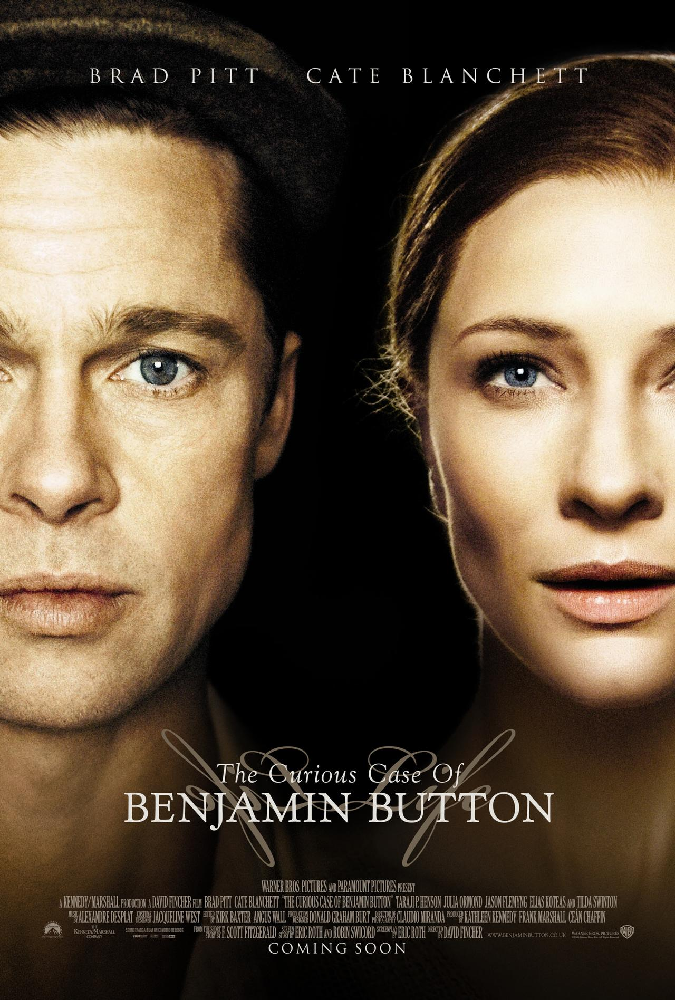

| Watched | ||
|---|---|---|
| Nominations | |||
|---|---|---|---|
| Category | Nominees | Result | Voted |
| Best Picture | Ceán Chaffin, Frank Marshall, and Kathleen Kennedy | Nominated | |
| Actor in a Leading Role | Brad Pitt | Nominated | |
| Actress in a Supporting Role | Taraji P. Henson | Nominated | |
| Directing | David Fincher | Nominated | |
| Writing (Adapted Screenplay) | Eric Roth and Robin Swicord | Nominated | |
| Cinematography | Claudio Miranda | Nominated | |
| Film Editing | Angus Wall and Kirk Baxter | Nominated | |
| Art Direction | Donald Graham Burt and Victor J. Zolfo | Won | |
| Costume Design | Jacqueline West | Nominated | |
| Makeup | Greg Cannom | Won | |
| Visual Effects | Burt Dalton, Craig Barron, Eric Barba, and Steve Preeg | Won | |
| Sound Mixing | David Parker, Mark Weingarten, Michael Semanick, and Ren Klyce | Nominated | |
| Music (Original Score) | Alexandre Desplat | Nominated | |